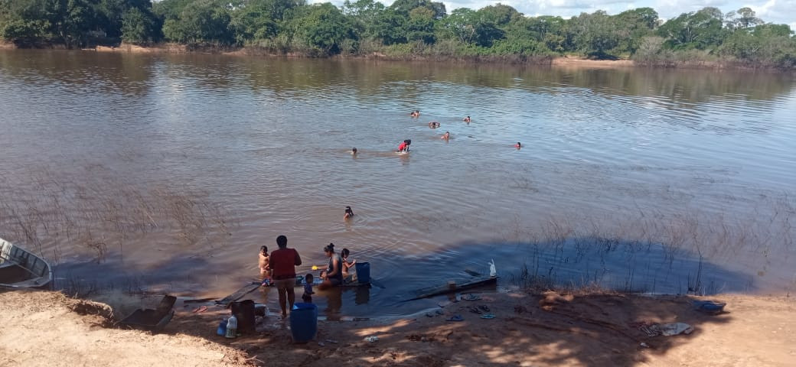

Aldeia Canuanã
Aldeia mãe do povo Javaé
Localização Rural Acesso pela BR 242 sentido Fundação Bradesco, SN - rural CEP 77.470-000 - Formoso do Araguaia - TO Pontos de Referência Acesso pela BR 242 sentido Fundação Bradesco Horário de Funcionamento Segunda, Terça, Quarta, Quinta, Sexta, Sábado, Domingo, Feriado: 06:00 - 18:00 Observação sobre funcionamento DURANTE O DIA Tipo de Visita Guiada; Entrada Franca Atividades Realizadas CULTURAL, EDUCATIVA, COMERCIALnvivência étnica, observação de animais da fauna